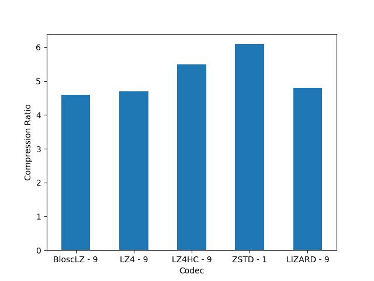
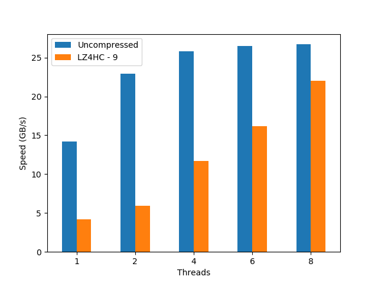
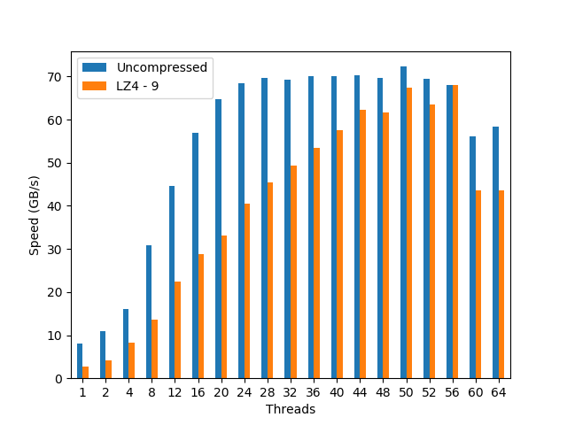

Breaking Down Memory Walls
Update (2018-08-09): An extended version of this blog post can be found in this article. On it, you will find a complementary study with synthetic data (mainly for finding ultimate performance limits), a more comprehensive set of CPUs has been used, as well as more discussion about the results.
Nowadays CPUs struggle to get data at enough speed to feed their cores. The reason for this is that memory speed is growing at a slower pace than CPUs increase their speed at crunching numbers. This memory slowness compared with CPUs is generally known as the Memory Wall.
For example, let's suppose that we want to compute the aggregation of a some large array; here it is how to do that using OpenMP for leveraging all cores in a CPU:
#pragma omp parallel for reduction (+:sum) for (i = 0; i < N; i++) { sum += udata[i]; }
With this, some server (an Intel Xeon E3-1245 v5 @ 3.50GHz, with 4 physical cores and hyperthreading) takes about 14 ms for doing the aggregation of an array with 100 million of float32 values when using 8 OpenMP threads (optimal number for this CPU). However, if instead of bringing the whole 100 million elements from memory to the CPU we generate the data inside the loop, we are avoiding the data transmission between memory and CPU, like in:
#pragma omp parallel for reduction (+:sum) for (i = 0; i < N; i++) { sum += (float)i; }
This loop takes just 3.5 ms, that is, 4x less than the original one. That means that our CPU could compute the aggregation at a speed that is 4x faster than the speed at which the memory subsystem can provide data elements to the CPU; or put in another words, the CPU is idle, doing nothing during the 75% of the time, waiting for data to arrive (for this example, but there could be other, more extreme cases). Here we have the memory wall in action indeed.
That the memory wall exists is an excellent reason to think about ways to workaround it. One of the most promising venues is to use compression: what if we could store data in compressed state in-memory and use the spare clock cycles of the CPU for decompressing it just when it is needed? In this blog entry we will see how to implement such a computational kernel on top of data structures that are cache- and compression-friendly and we will examine how they perform on a range of modern CPU architectures. Some surprises are in store.
For demonstration purposes, I will run a simple task: summing up the same array of values than above but using a compressed dataset instead. While computing sums of values seems trivial, it exposes a couple of properties that are important for our discussion:
This is a memory-bounded task.
It is representative of many aggregation/reduction algorithms that are routinely used out in the wild.
Operating with Compressed Datasets
Now let's see how to run our aggregation efficiently when using compressed data. For this, we need:
A data container that supports on-the-flight compression.
A blocking algorithm that leverages the caches in CPUs.
As for the data container, we are going to use the super-chunk object that comes with the Blosc2 library. A super-chunk is a data structure that is meant to host many data chunks in a compressed form, and that has some interesting features; more specifically:
Compactness: everything in a super-chunk is designed to take as little space as possible, not only by using compression, but also my minimizing the amount of associated metadata (like indexes).
Small fragmentation: by splitting the data in large enough chunks that are contiguous, the resulting structure ends stored in memory with a pretty small amount of 'holes' in it, allowing a more efficient memory management by both the hardware and the software.
Support for contexts: useful when we have different threads and we want to decompress data simultaneously. Assigning a context per each thread is enough to allow the simultaneous use of the different cores without badly interfering with each other.
Easy access to chunks: an integer is assigned to the different chunks so that requesting a specific chunk is just a matter of specifying its number and then it gets decompressed and returned in one shot. So pointer arithmetic is replaced by indexing operations, making the code less prone to get severe errors (e.g. if a chunk does not exist, an error code is returned instead of creating a segmentation fault).
If you are curious on how the super-chunk can be created and used, just check the sources for the benchmark used for this blog.
Regarding the computing algorithm, I will use one that follows the principles of the blocking computing technique: for every chunk, bring it to the CPU, decompress it (so that it stays in cache), run all the necessary operations on it, and then proceed to the next chunk:

For implementation details, have a look at the benchmark sources.
Also, and in order to allow maximum efficiency when performing multi-threaded operations, the size of each chunk in the super-chunk should fit in non-shared caches (namely, L1 and L2 in modern CPUs). This optimization avoids concurrent access to bus caches as much as possible, thereby allowing dedicated access to data caches in each core.
For our experiments below, we are going to choose a chunksize of 4,000 elements because Blosc2 needs 2 internal buffers for performing the decompression besides the source and destination buffer. Also, we are using 32-bit (4 bytes) float values for our exercise, so the final size used in caches will be 4,000 * (2 + 2) * 4 = 64,000 bytes, which should fit comfortably in L2 caches in most modern CPU architectures (which normally sports 256 KB or even higher). Please note that finding an optimal value for this size might require some fine-tuning, not only for different architectures, but also for different datasets.
The Precipitation Dataset
There are plenty of datasets out there exposing different data distributions so, depending on your scenario, your mileage may vary. The dataset chosen here is the result of a regional reanalysis covering the European continent, and in particular, the precipitation data in a certain region of Europe. Computing the aggregation of this data is representative of a catchment average of precipitation over a drainage area.
Caveat: For the sake of easy reproducibility, for building the 100 million dataset I have chosen a small geographical area with a size of 150x150 and reused it repeatedly so as to fill the final dataset completely. As the size of the chunks is lesser than this area, and the super-chunk (as configured here) does not use data redundancies from other chunks, the results obtained here can be safely extrapolated to the actual dataset made from real data (bar some small differences).
Choosing the Compression Codec
When determining the best codec to use inside Blosc2 (it has support for BloscLZ, LZ4, LZ4HC, Zstd, Zlib and Lizard), it turns out that they behave quite differently, both in terms of compression and speed, with the dataset they have to compress and with the CPU architecture in which they run. This is quite usual, and the reason why you should always try to find the best codec for your use case. Here we have how the different codecs behaves for our precipitation dataset in terms of decompression speed for our reference platform (Intel Xeon E3-1245):
|
 |

In this case LZ4HC is the codec that decompress faster for any number of threads and hence, the one selected for the benchmarks for the reference platform. A similar procedure has been followed to select the codec for the CPUs. The selected codec for every CPU will be conveniently specified in the discussion of the results below.
For completeness, I am also showing the compression ratios achieved by the different codecs for the precipitation dataset. Although there are significant differences for them, these usually come at the cost of compression/decompression time. At any rate, even though compression ratio is important, in this blog we are mainly interested in the best decompression speed, so we will use this latter as the only important parameter for codec selection.
Results on Different CPUs
Now it is time to see how our compressed sum algorithm performs compared with the original uncompressed one. However, as not all the CPUs are created equal, we are going to see how different CPUs perform doing exactly the same computation.
Reference CPU: Intel Xeon E3-1245 v5 4-Core processor @ 3.50GHz
This is a mainstream, somewhat 'small' processor for servers that has an excellent price/performance ratio. Its main virtue is that, due to its small core count, the CPU can be run at considerably high clock speeds which, combined with a high IPC (Instructions Per Clock) count, delivers considerable computational power. These results are a good baseline reference point for comparing other CPUs packing a larger number of cores (and hence, lower clock speeds). Here it is how it performs:
We see here that, even though the uncompressed dataset does not scale too well, the compressed dataset shows a nice scalability even when using using hyperthreading (> 4 threads); this is a remarkable fact for a feature (hyperthreading) that, despite marketing promises, does not always deliver 2x the performance of the physical cores. With that, the performance peak for the compressed precipitation dataset (22 GB/s, using LZ4HC) is really close to the uncompressed one (27 GB/s); quite an achievement for a CPU with just 4 physical cores.
AMD EPYC 7401P 24-Core Processor @ 2.0GHz
This CPU implements EPYC, one of the most powerful architectures ever created by AMD. It packs 24 physical cores, although internally they are split into 2 blocks with 12 cores each. Here is how it behaves:

Stalling at 4/8 threads, the EPYC scalability for the uncompressed dataset is definitely not good. On its hand, the compressed dataset behaves quite differently: it shows a nice scalability through the whole range of cores in the CPU (again, even when using hyperthreading), achieving the best performance (45 GB/s, using LZ4) at precisely 48 threads, well above the maximum performance reached by the uncompressed dataset (30 GB/s).
Intel Scalable Gold 5120 2x 14-Core Processor @ 2.2GHz
Here we have one of the latest and most powerful CPU architectures developed by Intel. We are testing it here within a machine with 2 CPUs, each containing 14 cores. Here’s it how it performed:
In this case, and stalling at 24/28 threads, the Intel Scalable shows a quite remarkable scalability for the uncompressed dataset (apparently, Intel has finally chosen a good name for an architecture; well done guys!). More importantly, it also reveals an even nicer scalability on the compressed dataset, all the way up to 56 threads (which is expected provided the 2x 14-core CPUs with hyperthreading); this is a remarkable feat for such a memory bandwidth beast. In absolute terms, the compressed dataset achieves a performance (68 GB/s, using LZ4) that is very close to the uncompressed one (72 GB/s).
Cavium ARMv8 2x 48-Core
We are used to seeing ARM architectures powering most of our phones and tablets, but seeing them performing computational duties is far more uncommon. This does not mean that there are not ARM implementations that cannot power big servers. Cavium, with its 48-core in a single CPU, is an example of a server-grade chip. In this case we are looking at a machine with two of these CPUs:

Again, we see a nice scalability (while a bit bumpy) for the uncompressed dataset, reaching its maximum (35 GB/s) at 40 threads. Regarding the compressed dataset, it scales much more smoothly, and we see how the performance peaks at 64 threads (15 GB/s, using BloscLZ) and then drops significantly after that point (even if the CPU still has enough cores to continue the scaling; I am not sure why is that). Incidentally, the BloscLZ codec being the best performer here is not a coincidence as it recently received a lot of fine-tuning for ARM.
What We Learned
We have explored how to use compression in an nearly optimal way to perform a very simple task: compute an aggregation out of a large dataset. With a basic understanding of the cache and memory subsystem, and by using appropriate compressed data structures (the super-chunk), we have seen how we can easily produce code that enables modern CPUs to perform operations on compressed data at a speed that approaches the speed of the same operations on uncompressed data (and sometimes exceeding it). More in particular:
Performance for the compressed dataset scales very well on the number of threads for all the CPUs (even hyperthreading seems very beneficial at that, which is a welcome surprise).
The CPUs that benefit the most from compression are those with relatively low memory bandwidth and CPUs with many cores. In particular, the EPYC architecture is a good example and we have shown how the compressed dataset can operate 50% faster that the uncompressed one.
Even when using CPUs with a low number of cores (e.g. our reference CPU, with only 4) we can achieve computational speeds on compressed data that can be on par with traditional, uncompressed computations, while saving precious amounts of memory and disk space.
The appropriate codec (and other parameters) to use within Blosc2 for maximum performance can vary depending on the dataset and the CPU used. Having a way to automatically discover the optimal compression parameters would be a nice addition to the Blosc2 library.
Final Thoughts
To conclude, it is interesting to remember here what Linus Torvalds said back in 2006 (talking about the git system that he created the year before):
[...] git actually has a simple design, with stable and reasonably well-documented data structures. In fact, I'm a huge proponent of designing your code around the data, rather than the other way around, and I think it's one of the reasons git has been fairly successful. [...] I will, in fact, claim that the difference between a bad programmer and a good one is whether he considers his code or his data structures more important. Bad programmers worry about the code. Good programmers worry about data structures and their relationships.
Of course, we all know how drastic Linus can be in his statements, but I cannot agree more on how important is to adopt a data-driven view when designing our applications. But I'd go further and say that, when trying to squeeze the last drop of performance out of modern CPUs, data containers need to be structured in a way that leverages the characteristics of the underlying CPU, as well as to facilitate the application of the blocking technique (and thereby allowing compression to run efficiently). Hopefully, installments like this can help us explore new possibilities to break down the memory wall that bedevils modern computing.
Acknowledgements
Thanks to my friend Scott Prater for his great advices on improving my writing style, Dirk Schwanenberg for pointing out to the precipitation dataset and for providing the script for reading it, and Robert McLeod, J. David Ibáñez and Javier Sancho for suggesting general improvements (even though some of their suggestions required such a big amount of work that made me ponder about their actual friendship :).
Appendix: Software used
For reference, here it is the software that has been used for this blog entry:
OS: Ubuntu 18.04
Compiler: GCC 7.3.0
C-Blosc2: 2.0.0a6.dev (2018-05-18)